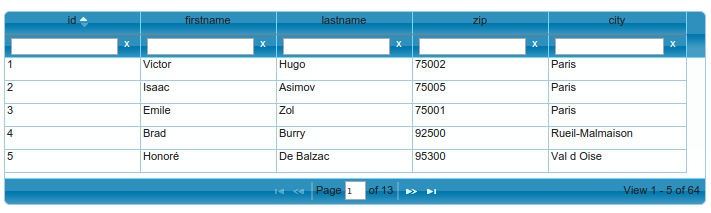

Télécharger le module : module guriddo
Présentation
Ce module est un module intégrable permettant d'afficher un tableau très riche dans votre application.Il s'appuie sur la librairie Guriddo: guriddo.net

Actualités
2016/11/05 : ajout du scrollbar pagingAvec cette nouvelle méthode vous permettez d'avoir une forme de scroll infini, plus vous scrollez, plus vous chargez de données.
2015/08/28 : correction d'un bug sur le CRUD Guriddo
Correction du paramétrage de la clé primaire du tableau pour corriger un problème dans la génération de formulaire.
Astuces
Parametres de colonnesModifier un attribut d'une cellule en fonction de son contexte
Modifier le contenu d'une cellule en fonction de son contexte
Ajouter des groupement de colonnes
Télécharger
Télécharger l'archive suivante : moduleGuriddo.zipDésarchivez dans le répertoire module de votre application.
Et copiez le répertoire public/guriddo dans votre répertoire public
Utilisation
L'idée est de vous faciliter le developpemenet de tableau richeVous pouvez télécharger ce module, l'utiliser mais surtout ne pas hésiter à le personnaliser pour vos applications afin de pouvoir le réutiliser.
L'implémentation se déroule en plusieurs étapes:
- 1. méthode principale construisant le tableau dans la page
- 2. appel ajax retournant les données sous un format json
- 3. les 4 méthodes à rédiger dans la classe modèle
1. Méthode principale: construction du tableau
Dans votre classe module, la méthode action, par exemple _list() d'un module "default"
public function _list(){
//instancier le module
$oTable=new module_guriddo;
//on indique le nombre de lignes par page
$oTable->setPaginationLimit(4);
//pour activez le scroll infinie
//$oTable->enableScrollbarPaging();
//l'id de la div html
$oTable->setId('monId');
//on definit la hauteur du tableau (en pixels)
$oTable->setHeight(120);
$oTable->setWidth(600);
//la page permettant de retourner le contenu au format json
$oTable->setJsonLink('default::listJson');
//on defini (si besoin) un menu deroulant permettant de modifier la pagination
$oTable->setListLimit(array(10,20));
//activer l'alternance des lignes
$oTable->enableAltRows();
//activer la reorganisation des colonnes
$oTable->enableSortable();
//definir le sens par defaut de tri (asc/desc)
$oTable->setDefaultSort('desc');
//defintion du tri par defaut
$oTable->setDefaultSortField('id');
//pour ajouter un group de colonne
//$oTable->addGroupColumn('Perrsonne',2,'firstname');
$oTable->addColumn('Nom','firstname',array('width'=>100));
$oTable->addColumn('Prenom','lastname');
$oTable->addColumn('Code postal','zip');
$oTable->addColumn('Ville','city');
$oView= $oTable->build();
//assigner la vue retournee a votre layout
$this->oLayout->add('main',$oView);
}
2. Méthode ajax retournant les données sous le format json
Dans votre méthode listJson du même module
public function _listJson(){
$oJson=module_guriddo::getJson();
//on precise la liste des champs autorise a etre trie
$oJson->setSortFieldAllowed(array('id','firstname','lastname','zip','city'));
//on precise la liste des champs autorise a etre filtre
$oJson->setFilterFieldAllowed(array('id','firstname','lastname','zip','city'));
if($oJson->hasFilter()){
$count = model_author::getInstance()->findTotalFiltered($oJson->getListFilter());
$oJson->setTotal($count);
$tData=model_author::getInstance()->findListFilteredAndLimitOrderBy($oJson->getListFilter(),$oJson->getStart(),$oJson->getLimit(),$oJson->getSortField(),$oJson->getSortSide());
}else{
$count = model_author::getInstance()->findTotal();
$oJson->setTotal($count);
$tData=model_author::getInstance()->findListLimitOrderBy($oJson->getStart(),$oJson->getLimit(),$oJson->getSortField(),$oJson->getSortSide());
}
$oJson->setData($tData);
$oJson->setId('id');
$oJson->addColumn('id');
$oJson->addColumn('firstname');
$oJson->addColumn('lastname');
$oJson->addColumn('zip');
$oJson->addColumn('city');
$oJson->show();
}
Comme vous pouvez le voir ici, on appelle 4 méthodes de la couche modèle: la premiere comptant le nombre total d'enregistremetn, la seconde triant ou filtrant le résultat
3. Les 4 méthodes à ajouter coté couche modèle
Dans notre exemple, on appelle une classe modèle author, voici les 4 méthodes à ajouter, je donne iciexemple sous MySql/MariaDb
//methode listant le nombre total d'enregistrements
public function findTotal(){
$oRow=$this->findOneSimple('SELECT count(*) as total FROM '.$this->sTable);
return $oRow->total;
}
//methode retournant les enregistrements trie et pagine
public function findListLimitOrderBy($start,$limit,$sField,$side){
return $this->findManySimple('SELECT * FROM '.$this->sTable.' ORDER BY '.$sField.' '.$side.' LIMIT '.$start.','.$limit);
}
//ici la meme chose incluant un filtre
//methode listant le nombre total d'enregistrements filtre
public function findTotalFiltered($tFilter){
foreach($tFilter as $sField => $sValue){
$tWhere[]=$sField.'=?';
$tValue[]=$sValue;
}
$oRow=$this->findOneSimple('SELECT count(*) as total FROM '.$this->sTable.' WHERE '.implode('AND',$tWhere).'',$tValue);
return $oRow->total;
}
//methode retournant les enregistrements trie et pagine et filtre
public function findListFilteredAndLimitOrderBy($tFilter,$start,$limit,$sField,$side){
foreach($tFilter as $sField => $sValue){
$tWhere[]=$sField.'=?';
$tValue[]=$sValue;
}
return $this->findManySimple('SELECT * FROM '.$this->sTable.' WHERE '.implode('AND',$tWhere).' ORDER BY '.$sField.' '.$side.' LIMIT '.$start.','.$limit,$tValue);
}
//methode listant le nombre total d'enregistrements
public function findTotal(){
$oRow=$this->findOneSimple('SELECT count(*) as total FROM '.$this->sTable);
return $oRow->total;
}
//methode retournant les enregistrements trie et pagine
public function findListLimitOrderBy($start,$limit,$sField,$side){
return $this->findManySimple('SELECT * FROM
(
SELECT TOP '.($start+$limit).' *, ROW_NUMBER() OVER (ORDER BY '.$sField.' '.$side.') AS rnum
FROM '.$this->sTable.' ORDER BY '.$sField.' '.$side.'
) a
WHERE rnum > '.$start);
}
//ici la meme chose incluant un filtre
//methode listant le nombre total d'enregistrements filtre
public function findTotalFiltered($tFilter){
foreach($tFilter as $sField => $sValue){
$tWhere[]=$sField.'=?';
$tValue[]=$sValue;
}
$oRow=$this->findOneSimple('SELECT count(*) as total FROM '.$this->sTable.' WHERE '.implode('AND',$tWhere).'',$tValue);
return $oRow->total;
}
//methode retournant les enregistrements trie et pagine et filtre
public function findListFilteredAndLimitOrderBy($tFilter,$start,$limit,$sField,$side){
foreach($tFilter as $sField => $sValue){
$tWhere[]=$sField.'=?';
$tValue[]=$sValue;
}
return $this->findManySimple('SELECT * FROM
(
SELECT TOP '.($start+$limit).' *, ROW_NUMBER() OVER (ORDER BY '.$sField.' '.$side.') AS rnum
FROM '.$this->sTable.' WHERE '.implode('AND',$tWhere).' ORDER BY '.$sField.' '.$side.'
) a
WHERE rnum > '.$start,$tValue);
}
Notes en plus
Parametres de colonnes
Vous pouvez ajouter des parametres aux colonnes du tableau en passant un tableau en 3ème paramètrePar exemple :
- largeur (width),
- alignement (align),
- redimensionnalbe (resizable),
- triable (sortable)
Plus d'information ici: wiki
Exple:
$oTable->addColumn('Nom','firstname',array(
'width'=>100,
'align'=>true,
'resizable'=>true,
'sortable'=>true));
Paramètre "cellattr" : Modifier un attribut d'une cellule en fonction de son contexte
On peut avoir besoin de modifier le style/la classe cellule en fonction du contextePar exemple passer en fond rouge si la ville est vide
$oTable->addColumn('Code postal','zip',array(
'cellattr'=>
"function(rowId,val,rawObject,cm,rdata){
if(rawObject.city==''){
return 'style=\'background:red\'';
}
}"));

On définit pour l'optin "cellattr" une fonction javascript contenant 5 arguments:
rowId: l'id de la ligne en cours
val: la valeur de la cellule courante
rawObject: l'objet contenant les valeurs de la ligne courante
cm : l'objet colModel de la colonne
rdata: est très similaire à rawObject
Comme on peut le voir , on retourne les attributs du td, on peut donc également ajouter un attribut onClick à notre cellule..
Paramètre "formatter" : Modifier le contenu d'une cellule en fonction de son contexte
On peut avoir besoin de modifier le contenu d'une cellule en fonction du contextePar exemple, ajouter un lien sur le nom si le champ monLien est renseigné (monLien qui peut être un champ caché, juste présent dans le json)
$oTable->addColumn('Nom','firstname',array(
'formatter'=>
"function ( cellValue, options, rowObject ){
if(rowObject.monLien!=''){
return '<a href="'+rowObject.link+'">'+cellValue+'</a> ';
}else{
return cellValue;
}
}"));
On définit pour l'optin "cellattr" une fonction javascript contenant 3 arguments:
cellValue: la valeur de la cellule
options: les options du colModel correspondant
rowObject: l'objet contenant les valeurs de la ligne courante
Comme on peut le voir , on retourne la valeur de la cellule modifiée ou non
Ajouter des groupement de colonnes
Vous pouvez faire des regroupement de colonne, par exemple- Libelle de la colonne
- nombre du colspan
- nom de la colonne de début
$oTable->addGroupColumn('Contact',2,'firstname');
$oTable->addColumn('Nom','firstname',array('width'=>100));
$oTable->addColumn('Prenom','lastname');
$oTable->addColumn('Code postal','zip');
$oTable->addColumn('Ville','city');
$oTable->addGroupColumn('Adresse',2,'zip');
//$oTable->addHeaderWithOrder('ID','id');
$oTable->addColumn('Nom','firstname',array('width'=>100));
$oTable->addColumn('Prenom','lastname');
$oTable->addColumn('Code postal','zip');
$oTable->addColumn('Ville','city');